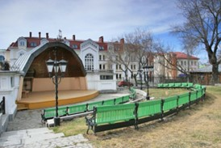
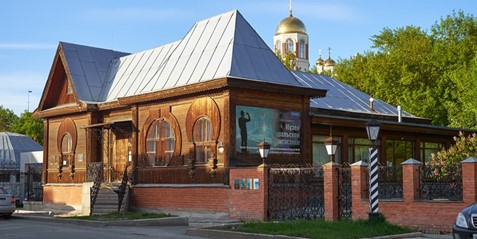

Литературный квартал
Литературный квартал, расположенный в сердце Екатеринбурга, — совершенно уникальный музейный комплекс, аналогов которому в нашей стране нет. Только вдумайтесь: в рамках Объединенного музея писателей Урала тут собраны более 10 музеев, издается собственный журнал, ведется постоянная просветительская и театральная деятельность. Но и это не главное.Посетив Литературный квартал, легко окунуться в атмосферу старого Екатеринбурга, пройти по мощеной мостовой, отдохнуть среди тенистых аллей, насладиться видами старинных вилл и даже увидеть поэтов и писателей за работой, нередко заглядывающих сюда.
По музеям-особнякам Литературного квартала можно бродить бесконечно — совсем не хочется покидать это место, наполненное удивительной атмосферой великих и давно ушедших времен. Одни имена бывших жителей местных особняков — настоящий пантеон русской словесности. Вот, например, в красивом старинном доме некоторое время проживал Д. Н. Мамин-Сибиряк. Сегодня тут находится Музей литературной жизни Урала 19 века. Экспозиция его посвящена и Мамину-Сибиряку, и его коллегам из других областей искусства — живописи, музыки, театра. В музее периодически проводятся музыкальные вечера и чаепития.
В Доме-музея Ф. М. Решетникова посетители познакомятся не только с жизнью и творчеством Федора Михайловича, но и с тонкостями ямской и почтовой службы. Ведь будущий прозаик появился на свет в семье почтальона. Еще одна интересная экспозиция квартала — это музей кукол и детской книги «Страна чудес».  